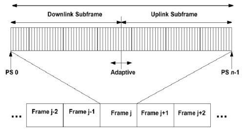
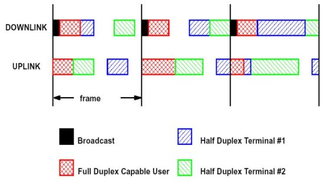
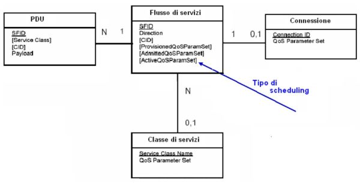

Torna alla pagina di Protocolli avanzati di rete
:: Protocolli avanzati di rete - Appunti del 26 Maggio ::
Tutte le immagini di questa pagina sono prese dalle slide del prof Damiani
802.16
Come abbiamo anticipato nella scorsa lezione, il protocollo 802.16 si propone l'obiettivo di realizzare una wireless MAN (Metropolitan Area Network), quindi con estensioni a livello cittadino (tra i 10 e i 20 km di estensione).
Come nelle reti pubbliche abbiamo delle stazioni base (base station) che gestiscono fino a diverse centinaia di abbonati con le loro subscribers station. Il protocollo supporta ed offre numerosi servizi, tra cui naturalmente il TCP/IP, il VoIP, sistemi vocali residenziali e altri ancora.
Livello fisico
A livello fisico l'802.16 consente l'utilizzo di due diversi tipi di duplexing, ovvero di tecniche per separare il canale di uscita da quello di entrata: il time division duplexing (TDD) e il frequency division duplexing (FDD). Nel TDD ogni frame è suddiviso in una serie di sottoframe, ed ognuno di essi è ulteriormente diviso in sottoframe di downlink e di uplink, quindi rispettivamente con direzione della trasmissione entrante ed uscente. La suddivisione tra subframe di downlink e uplink è adattiva, quindi quando la quantità di dati da caricare aumenta si può allocare dinamicamente più banda all'uplink, mentre quando diminuisce è possibile toglierne. Come nella rete pubblica, se due stazioni non hanno nulla da dirsi ed arriva il loro turno, non viene inviato nulla e si sprecherà uno slot con buona pace di tutti (esattamente quello che accade nella telefonia pubblica).

Grazie al duplexing TDD si riesce ad assegnare un frame per ogni collegamento tra base station e/o subscribers station (con una tecnica molto simile a quella dei ponti radio), ma come bisogna modularli? L'802.16 prevede che le modalità di modulazione possano essere diverse per ogni frame e per ogni collegamento, al contrario di tutti gli altri protocolli visti finora, in cui c'era un unico profilo standard che al massimo cambiava a seconda dell'installazione di rete. Il motivo di questa scelta sta nel fatto che ogni frame deve corrispondere ad un certo ponte radio, quindi deve portare traffico in un certo collegamento che avrà situazioni variabili di line of sight, rumore, ed altri fattori dipendenti dalle posizioni delle stazioni. Ogni coppia di antenne ha infatti esigenze diverse, anche molto lontane tra loro, dunque è inevitabile scegliere modulazioni differenti che meglio si adattano alle necessità. Questi profili di burst adattivi sono identificati con gli Interval Usage Code (DIUC e UIUC, rispettivamente per downlink e uplink), ovvero codici che codificano come verrà generato e modulato il segnale fisico per ogni coppia di antenne.
Rispetto all'HDSPA il problema di connessione delle base stations è molto diverso dato che qui sono tutte collegate via cavo, mentre nell'802.16 è tutto wireless. Stiamo quindi guadagnando in flessibilità dato che non abbiamo più problemi di posa (come portare il cavo in località remote, come la giungla, suggerisce il prof), ma perderemo molto più tempo per la configurazione delle antenne. Infine, le base station sono collegate tra loro con uno schema time division multiplexing (TDM), in cui però ogni frame è preceduto da un preambolo che darà informazioni sul profilo di generazione e modulazione previsto per un certo collegamento.
Livello MAC
Il controllo di accesso al mezzo (MAC) nel protocollo 802.16 è orientato alla connessione, quindi la creazione del canale tra una coppia di antenne deve essere esplicita. Bisogna inoltre introdurre un sistema che permetta di ripartire i frame tra subframe in downlink e quelli in uplink, e per questo motivo si usano delle vere e proprie mappe (DL-Map e UL-Map) trasmesse all'inizio di ogni sottoframe in downlink. Per capirle meglio commentiamo questa figura:

Anzitutto va detto che non tutti i collegamenti tra stazioni sono full-duplex, ma succede spesso che se una stazione trasmette allora non può ricevere, e viceversa. Nella figura osserviamo che all'interno dello stesso frame il downlink comincia sempre con la ricezione di un preambolo mandato in broadcast, che ci dice per quanto tempo il tratto è full o half-duplex, per quanto le stazioni dovranno essere in downlink e per quanto in uplink. Più che a un modello a contesa questo meccanismo assomiglia di più a un master-slave, dal momento che il master decide come gestire il frame e l'altro non può che adeguarsi (più tardi vedremo delle eccezioni). Altre osservazioni sulla figura sopra:
- le parti in full-duplex possono tranquillamente sovrapporsi
- non è detto che per lo stesso flusso il tempo di ricezione e trasmissione sia uguale
- tra un flusso e l'altro di stazioni half-duplex c'è un tempo di gap per permettere al flusso stesso di invertirsi
- poiché il preambolo permette di fare controllo anche sul broadcast, l'802.16 è potenzialmente utilizzabile anche per la comunicazione in broadcast di tipo telefonico
Anticipiamo un concetto che vedremo meglio poi: abbiamo detto che è il master che decide la suddivisione dei frame, e che segnala attraverso degli start points quando fare uplink/downlink e quando full/half-duplex. Il ricevente può però inoltrare una sua richiesta di banda per i downlink successivi utilizzando i bit iniziali inviati nel suo subframe di uplink. Tale richiesta di bandwidth può andare in collisione se il master non ne ha abbastanza da dargli e l'altro l'ha già occupata, ed è questa l'unico tipo di contesa che si può avere nell'802.16. Il protocollo prevede che il master valuti sempre queste richiesta, ma gli lascia ovviamente la possibilità di scegliere cosa fare.
Questo tipo di assestamento della rete per la distribuzione della banda può essere fatto anche in drive-run, ovvero con tutti i collegamenti funzionanti ma senza traffico dati. Tipicamente svolto in fase di configurazione iniziale della rete, si aspetta che le stazioni periferiche facciano la loro richiesta di banda alla base station responsabile, e questa al prossimo giro valuterà come e a chi assegnarle. Ribadiamo che le stazioni non dovrebbero dare per scontato che la loro richiesta venga accolta, perché se usano la banda prima di avere il permesso e poi questo permesso non è accordato, avremo collisioni.
Per quanto riguarda le prestazioni, dato che ci troviamo in una situazione equiparabile alla collision avoidance, possiamo garantire una certa banda minima sia in downlink che in uplink, anche se quest'ultima la si garantisce con maggiori difficoltà. Inoltre, possiamo vendere a tutti gli host che ne facessero richiesta delle offerte più vantaggiose in termini di banda: come? Assegando codici speciali da includere nel preambolo, e che il master è in grado di riconoscere così che le richieste di banda di quelle stazioni saranno accolte il più spesso possibile.
Gestione della banda
Come abbiamo potuto intuire dagli ultimi discors, il principale problema del MAC del protocollo 802.16 (e dei MAC in generale) è quello di garantire banda. Alle subscriber stations sono dati tre modi per richiedere banda:
- usare l'intervallo "opportunità di richiesta di contesa" che sarà esaminato dalla base station
- inviare un messaggio MAC autonomo chiamato "richiesta LB" in uno slot già garantito
- incorporare un messaggio di richiesta di LB in un pacchetto dati
Indipendentemente da come gli arriva la richiesta, le base station decide come garantire e/o allocare larghezza di banda basandosi su diversi fattori, e una volta deciso può scegliere se farlo in GPSS (Grant Per Subscriber Station) o in GPC (Grant Per Connection).
Un'utilissima caratteristica dell'802.16, una di quelle che le fa meritare l'appellativo di "protocollo avanzato", è quella di prevedere diversi meccanismi di richiesta di banda a seconda delle necessità attuali, tenendo conto soprattutto dei diversi profili di variabilità delle sorgenti di banda. Tradotto: le subscriber station hanno diversi modi per richiedere più banda, ognuno dei quali è ottimizzato per certe situazioni (di traffico, di sorgenti, di servizio, ...). Vediamo quali sono:
- UGS (Unsolicited Grant Service), che si applica a scenari in tempo reale, con trasmissioni di pacchetti a dimensione fissa (ad esempio il VoIP). La base station garantisce di inviare periodicamente dei pacchetti Poll-me ad ogni subscriber station, e se queste dopo che l'hanno ricevuto gli chiedono banda allora lui sarà obbligato a dargliene abbastanza per inviare un frame. Ripetiamo che siamo in situazioni come il VoIP in cui i frame hanno grandezze fisse, quindi o hanno dimensione 0 (non sono utilizzati) o ne hanno una già nota a priori
- rtPS (real-time Polling Service), per scenari in cui ci sono trasferimenti periodici di pacchetti a dimensione variabile. Un esempio è quella della trasmissione di un file video MPEG, che ha una codifica differenziale: per ogni fotogramma si inviano solo le informazioni sui pixel che cambiano. In questo caso potrei quindi avere momenti in cui ho bisogno di poca banda e altri in cui ne ho bisogno di tantissima. Una soluzione stupida sarebbe assegnare sempre tutto il frame, ma allora l'utilità della codifica dell'MPEG va a ramengo. La soluzione offerta nel protocollo è invece quella del polling unicast, in cui il master invia dei poll-me periodici e lo slave continua a inoltrare richieste di banda fino a quando non ottiene quella che si aspetta: prima di questo momento non invia nulla. L'aspetto negativo di questo sistema è che aumenta il tempo di latenza
- nrtPS (non-real-time Polling Service'), per situazioni in cui abbiamo pacchetti a dimensioni variabili e una buona tolleranza ai ritardi. In questo caso rimane sempre l'impegno del master di inviare pacchetti poll-me, ma senza l'obbligo di farlo con periodicità
- BES (Best Effort Service), che si può tradurre in "io ti dò questa banda e tu ci fai quello che vuoi". E' la soluzione che costa meno perché il master non si preoccupa minimamente di fare polling unicast
Cenni di QoS
Da wikipedia: "Nel campo delle reti di telecomunicazioni, il termine Qualità di servizio o più semplicemente QoS (dall'inglese Quality of Service) è usato per indicare i parametri usati per caratterizzare la qualità del servizio offerto dalla rete (ad esempio perdita di pacchetti, ritardo), o gli strumenti per ottenere una qualità di servizio desiderata."
Il modello a oggetti che rappresenta il QoS è il seguente:

Tra le entità coinvolte nel modello c'è il PDU che identifica il tipo di frame, il flusso di servizio che sarà attivato presso un certo utente e potrà creare una connessione unica (almeno nell'802.16). In questo modello le condizioni di un flusso di servizi sono una particolare istanza di quanto rappresentato in figura, e mi danno indicazioni su che tipo di QoS sto offrendo. Altra entità coinvolta è la classe di servizio, che è la definizione di un certo tipo di scheduling (ad esempio una riserva di canale esclusiva, o a contesa, o con uno dei profili usati nell'802.16).
Si può arrivare ad avere un'attivazione automatica di una certa istanza del modello? Nel protocollo 802.16 sì, perché ad alto livello scelgo i profili di servizio che saranno poi implementati sul servizio offerto.
802.16a
Qual è il futuro del protocollo 802.16? Vediamo le caratteristiche di una popolare estensione, la 802.16a:
- supporto alla topologia di rete mesh (http://it.wikipedia.org/wiki/Wireless_mesh_network)
- supporto alle tecnologie che non risentono del line of sight, con la possibilità quindi di installare le antenne in posizioni qualunque
- modulazioni diverse che arrivano fino a 11GHz
- implementazione del DFS (Dynamic Frequency Selection), che evita le interferenze tra trasmissioni 802.11 e 802.16
- evoluzione del modello QoS a oggetti, in cui si possano maneggiare gli oggetti in run-time così da influire sul funzionamento della rete
- supporto alla tecnologia ARQ (Automatic Repeat Request)
Torna alla pagina di Protocolli avanzati di rete